빨간 점선은 다음 target 요청 시작 시점입니다. 초록 원은 PS cache 완성, 삼각형은 draft가 다음 명령을 받을 준비가 된 시점입니다. 여유 시간은 관측된 차이이며 모두 추가 계산에 써도 된다는 뜻은 아닙니다. 회색 수신 구간과 target 응답 대기를 PS 지연으로 단정하지 않습니다. 각 페이지의 두 step은 같은 요청의 연속 기록이며, 다음 요청의 경계만 두 번째 마감 계산에 사용합니다. 과거 모델 trace와 새 최적화 trace는 제목으로 구분합니다.
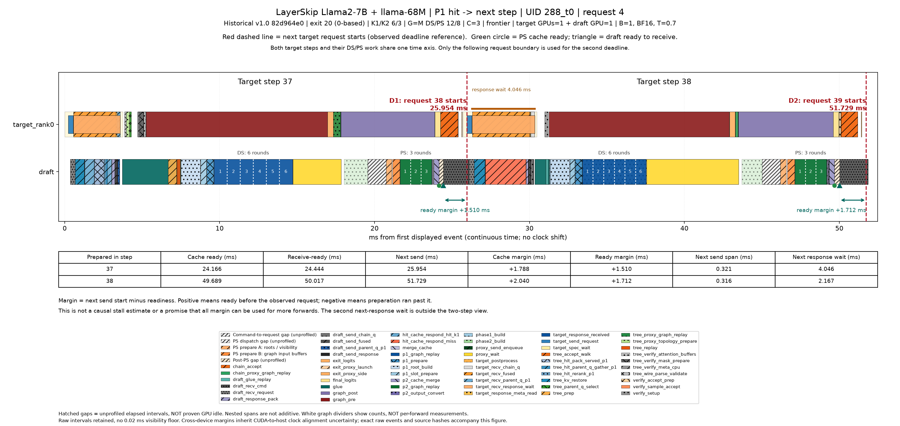
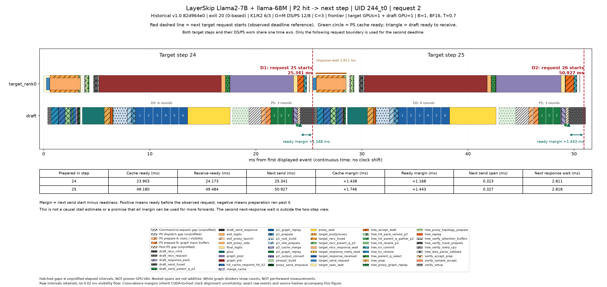
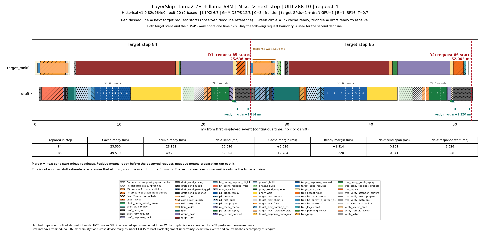
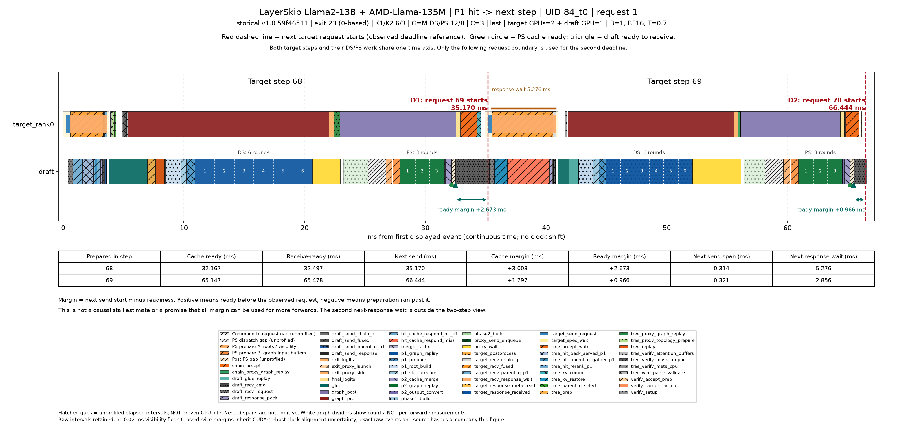
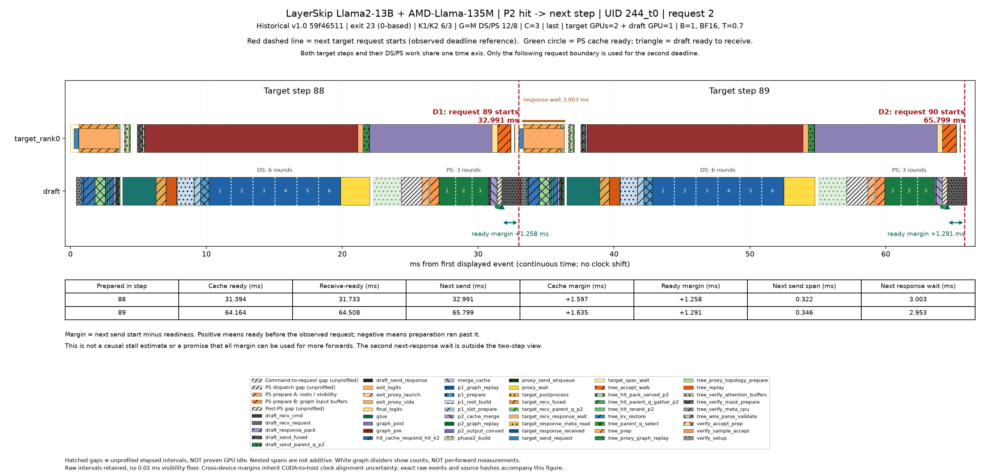
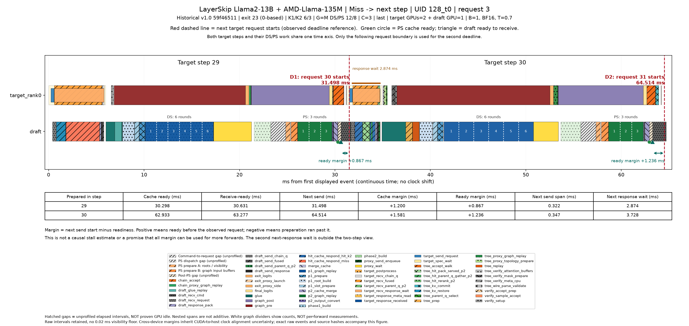
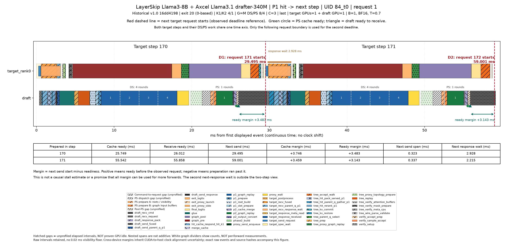
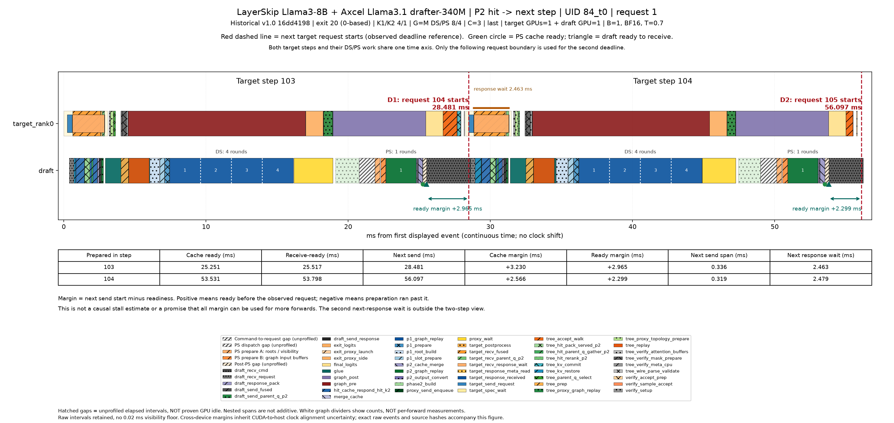
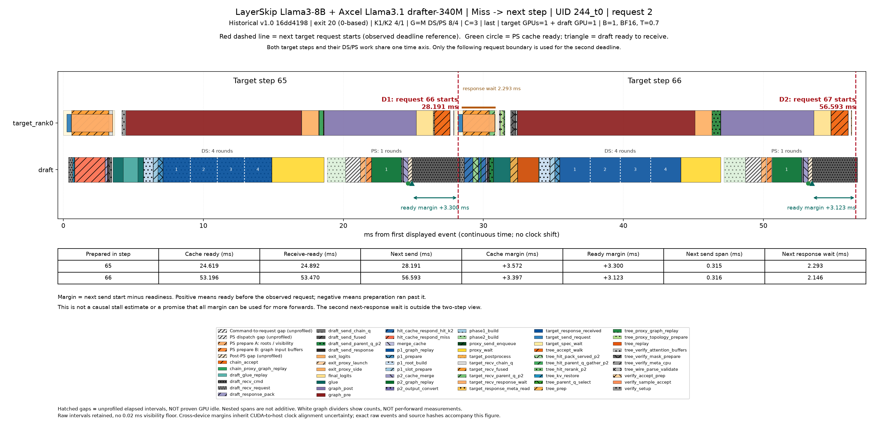
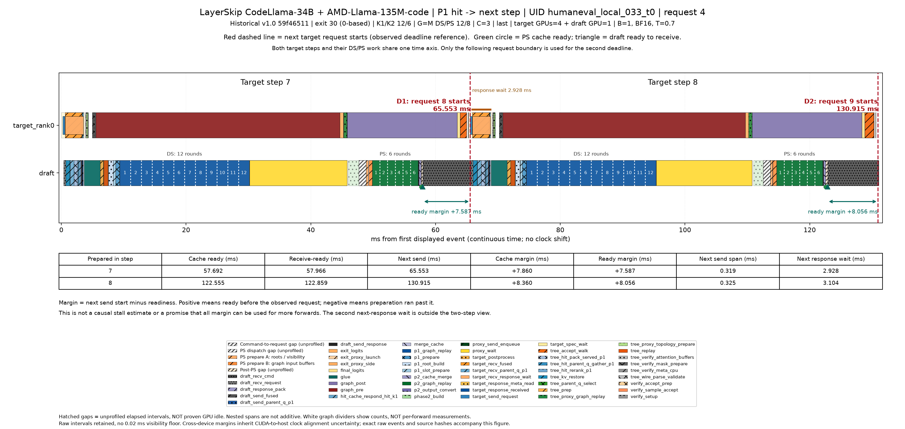
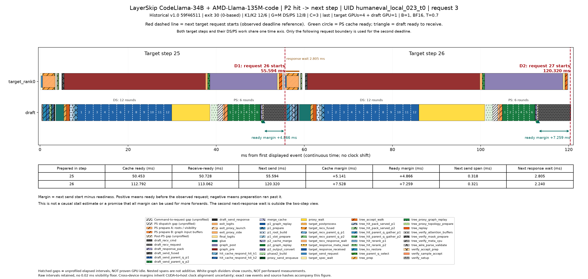
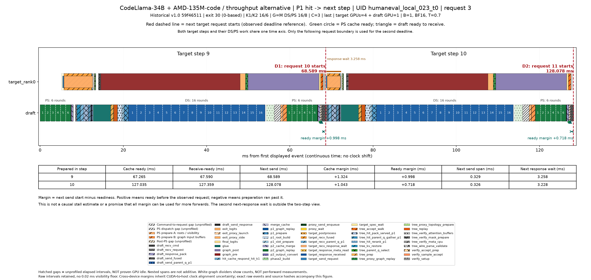
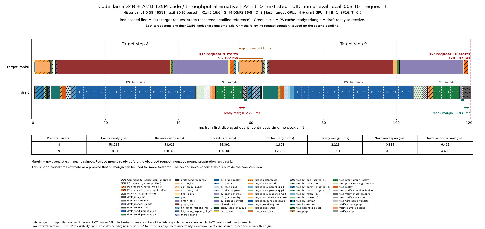
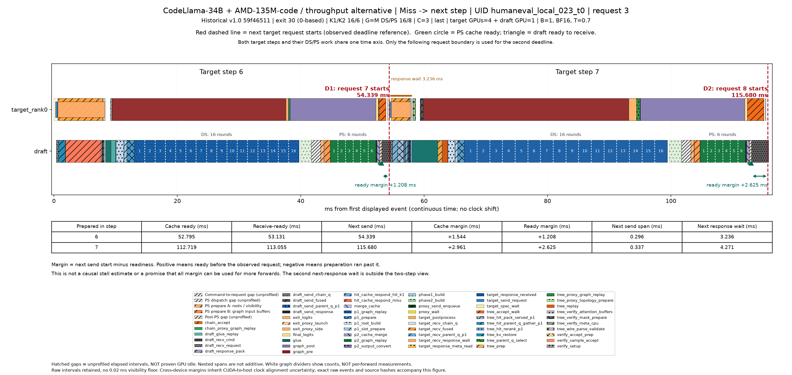